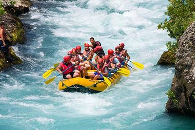
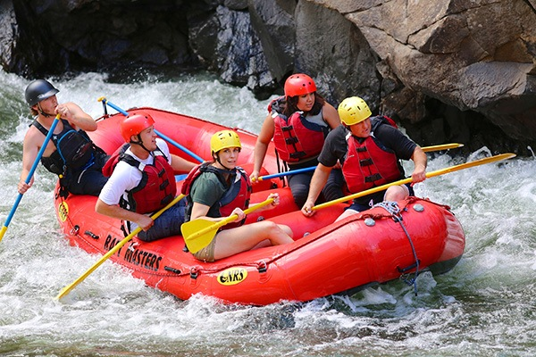
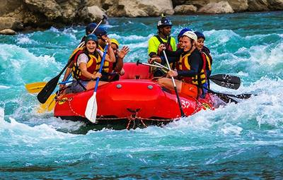
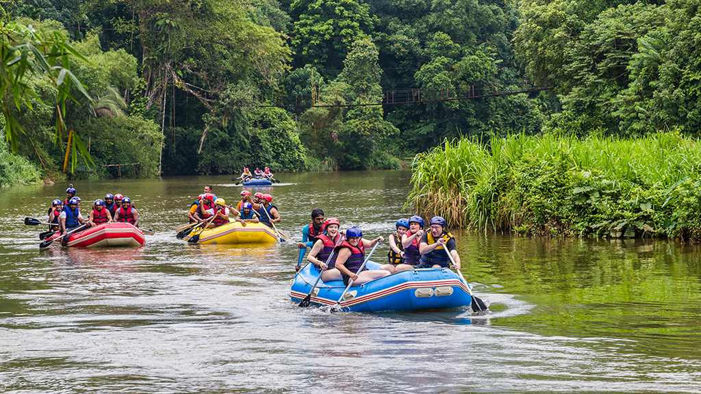
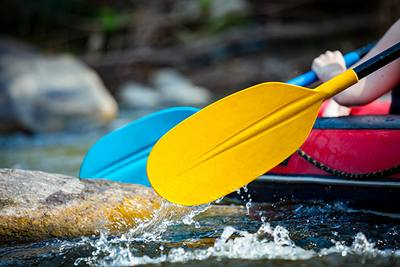

Salto do Rio Negro
A descida atravessa corredeiras de água azul em um bote
estável, com trechos de remada contínua e paradas para
ajustar a formação do grupo. O percurso dura cerca de
três horas e pede disposição moderada. É uma boa escolha
para quem já remou ou quer o primeiro contato com ondas
mais constantes, a partir de 12 anos.

Rio Paranapanema
O grupo rema entre paredões de pedra, em um canal mais
estreito e com ondas que exigem comando claro no bote.
São quatro horas de atividade, com briefing antes de
entrar na água e apoio da equipe nos trechos mais fortes.
A dificuldade vai de moderada a alta, e a idade mínima
é de 14 anos.

Rio Jacaré
As corredeiras são mais curtas e intercaladas com remansos,
o que deixa tempo para o grupo se reorganizar e curtir a
descida. O passeio dura cerca de três horas e é o mais
acessível da programação, indicado para famílias. A
dificuldade é fácil e a idade mínima é de 8 anos,
sempre com colete e capacete.

Cachoeira do Sol
O dia combina trechos calmos, cercados de mata, com alguns
rápidos leves e uma parada na margem para lanche. A saída
ocupa cerca de seis horas, já com o deslocamento a partir
de Curitiba. A dificuldade fica entre fácil e moderada.
Podem participar crianças a partir de 10 anos.

Corredeiras da Serra
É a descida mais técnica: uma sequência de corredeiras na
serra, com briefing longo e funções definidas para cada
pessoa no bote. O passeio dura cerca de cinco horas e
pede experiência prévia ou boa condição física. A
dificuldade é alta e a idade mínima é de 16 anos.